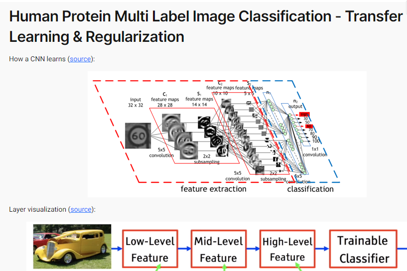
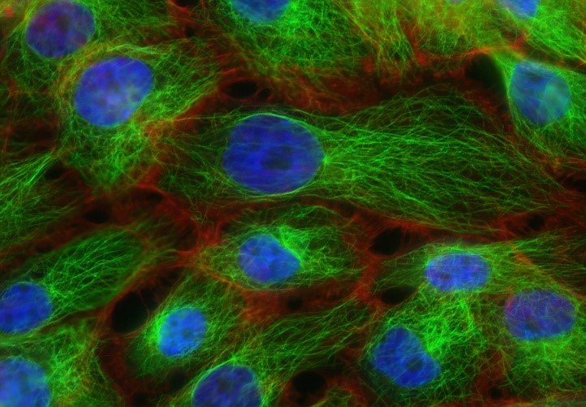
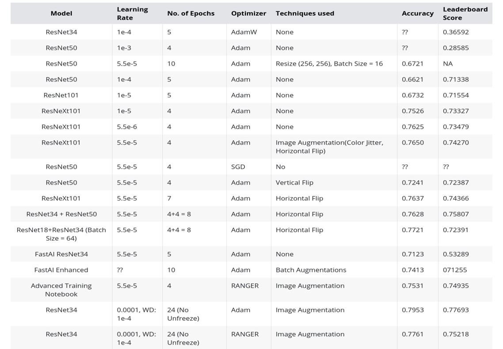

Human Protein Multi Label Image Classification
This was a project I started when part of the course JovianML zero to Gans. I used the Kaggle provided Human Protein Dataset.The goal was to identify which proteins are in each image.
After some research, as well as the instructor’s advice, a pre-trained network, Resnet34, was used. The ResNet34 network is a highly deep network, being famous for dealing with images extremely well.
Most of the transformations consist on changing the image by some aspect, either by rotation, flipping (horizontally or vertically), cropping or even changing the contrast and saturation (which showed no improvement for this particular case).
I used Batch Normalisation which was already implemented in the default architecture of Resnet34. It normalises the weights of the activation layers after each batch, not allowing the weights to either become too large or too low, as high variance numbers can lead to overfitting or a slower training.
I worked on this course for 6 weeks learning from basics to Gans and this completed this project to qualify for course completion certificate.
Technologies:
- - Python
- - Deep learning(PyTorch)
- - Normalization
- - Resnet34
- - ADAMW optimizer
Human Protein

Technologies Used

Learned

Summary Report

Score Result

